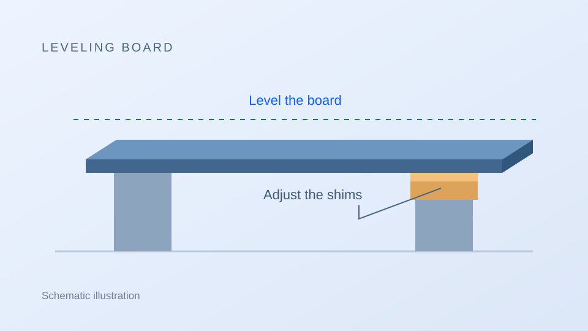
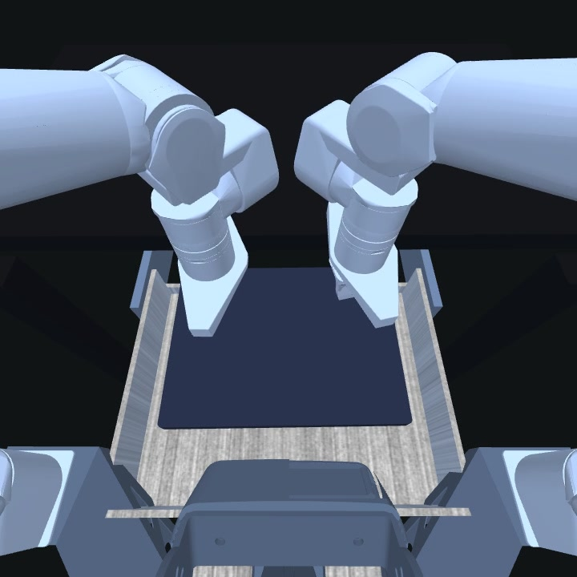

Learning from action outcomes
Task completion alone does not show how a policy improves. Repeated practice reveals how the outcome of one attempt informs the next.
Benchmark for robot manipulation
Practice, Adapt, Perform: Benchmarking Learning by Doing in Robot Manipulation
Can a robot learn from the consequences of its actions and turn physical experience into better performance?
ReAct-Manip evaluates whether a robot can use the consequences of its own actions to improve manipulation through physical trial and error.
Task completion alone does not show how a policy improves. Repeated practice reveals how the outcome of one attempt informs the next.
Hidden dynamics, unknown control mappings, and occluded state can make the right action unclear from an initial observation.
A policy may need to test actions, interpret feedback, and revise later attempts. ReAct-Manip separates prior skill, correction within an Episode, and experience retained across Episodes of the same Task Instance.
Latent information may concern dynamics and material properties, control mappings, or occluded physical state and task mappings. Each TaskSpec declares which observations are public and which properties remain private.
Can experience from a failed contact or an unexpected trajectory lead to better performance within a limited number of attempts?
For each Task Instance, policies PRACTICE through physical interaction, ADAPT from action outcomes, and PERFORM in evaluation Episodes.
Use 10 practice Episodes to test actions and observe their consequences, gathering evidence about hidden dynamics, control mappings, or occluded state.
Revise later actions using interaction feedback and retained experience. Memory, context, planning state, or online parameters may be updated during both practice and evaluation.
Use the same policy for 5 evaluation Episodes after practice. Apply accumulated experience to complete the task, while continuing to adapt to each recorded Episode condition.
Apply each task's declared success rules. Average final task scores over evaluation Episodes 11–15, and report success and run validity separately.
The same policy runs 10 practice Episodes followed by 5 evaluation Episodes for each Task Instance. Adaptation is permitted throughout both phases, and experience may be retained across Episodes. A fresh policy is created for the next Task Instance.
Each TaskSpec defines the task objective, action space, public observations, success and failure rules, and score. The Task Instance supplies a stable baseline; permitted Episode-level changes are resolved and recorded before execution. Resetting the same Episode restores that recorded condition.
Cross-task scores use task bounds declared before evaluation and equal weighting across the 16 task types. Practice-to-evaluation improvement is reported separately from a paired retained-history versus cleared-history comparison, which is needed to attribute gains to prior experience.
ReAct-Manip contains 16 task types implemented in MuJoCo/robosuite, with three Task Instances per type. The released bank contains 48 instances and 720 explicit Episodes, spanning grasping, placement, contact, dynamic release, tool use, spatial search, and control.
Stably lean a phone
Level a board with shims

Task illustrationRelease a ball to a cup

Throw a ball into a pot
Sort moving targets
Stop a stone in a target
Stop at a scoring sector
Throw a ring onto posts
Insert an asymmetric block
Drive through obstacles
Stably hang a chain
Flip and recapture a pie
Match buttons to lights
Insert a laptop and close drawer
Find and collect targets
Guide a ball through a maze
| Rank | Category | Leaderboard ID | Score |
|---|---|---|---|
| REACT-MANIPRankings are not available yet.Completed evaluations will appear here. | |||
Practice, Adapt, Perform: Benchmarking Learning by Doing in Robot Manipulation
@misc{reactmanip2026,
title = {ReAct-Manip: Practice, Adapt, Perform: Benchmarking Learning by Doing in Robot Manipulation},
author = {The ReAct-Manip Team},
year = {2026},
howpublished = {ReAct-Manip benchmark website},
url = {https://quotient-lab.github.io/react-manip-site/}
}